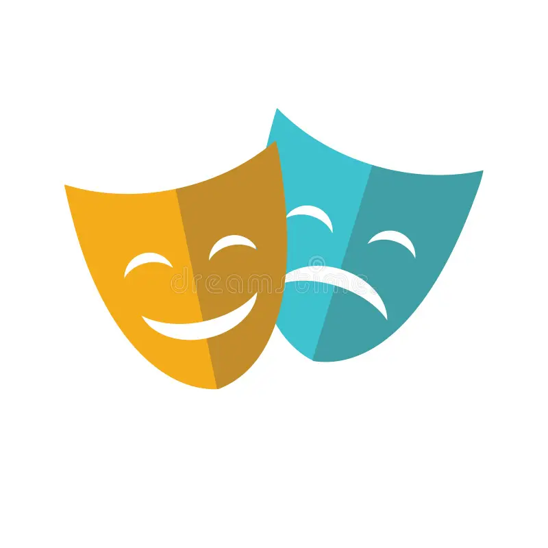

Das CSDC Theater ist als österreichisches Nationaltheater die wichtigste Schauspielbühne des Landes und das größte Sprechtheater Europas, das Tradition, Vielfalt und Fortgang verbindet.In den vergangenen Jahren arbeiteten am Haus kontinuierlich die Regisseure und Regisseurinnen David Bösch, Jan Bosse, Andrea Breth, Barbara Frey, Dieter Giesing, Alvis Hermanis, Stephan Kimmig, Antú Romero Nunes, René Pollesch, Roland Schimmelpfennig und Michael Thalheimer. Das Ensemble umfasst über 80 namhafte fest engagierte SchauspielerInnen und Gäste.
Programm